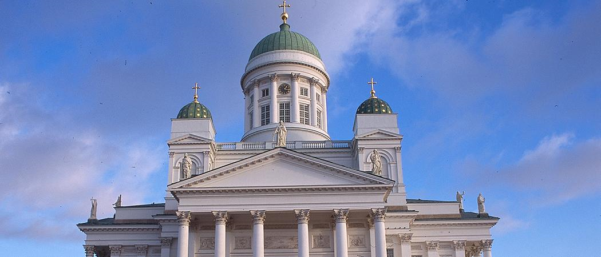
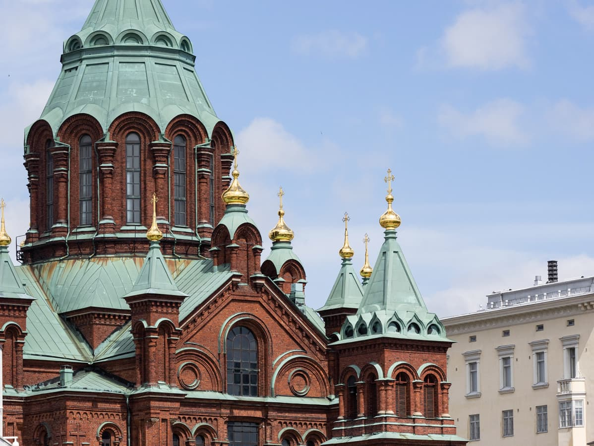
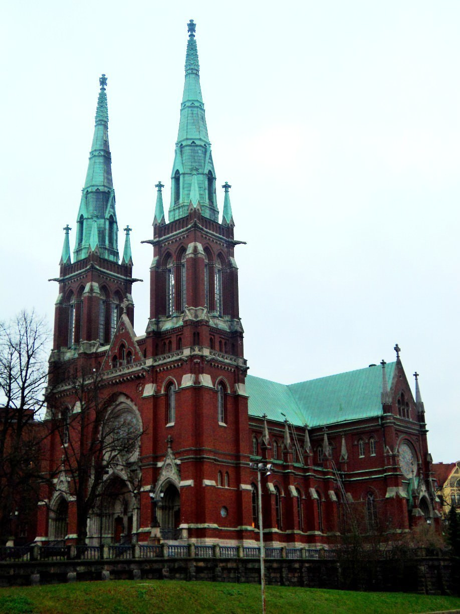
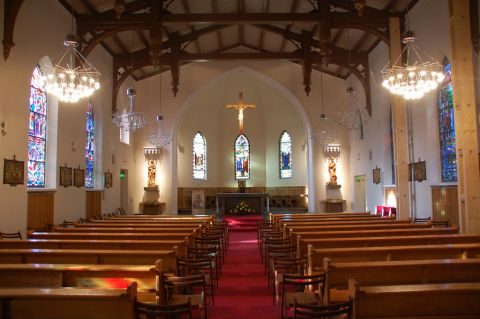
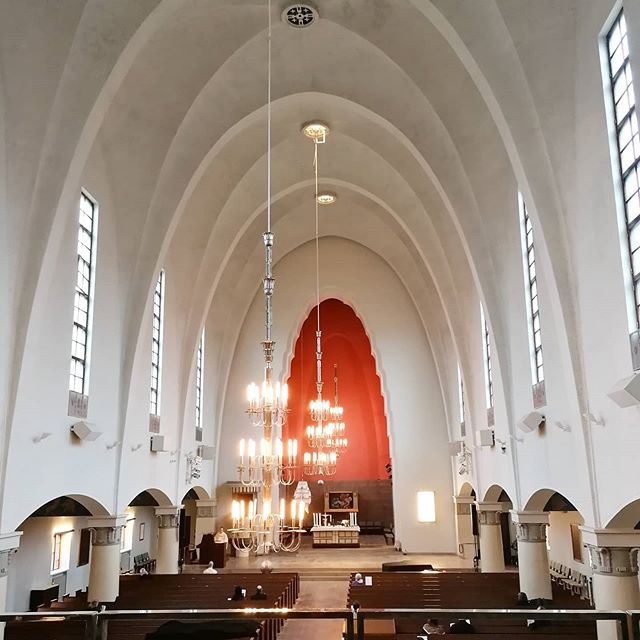

Churches
Cathedral
"The first sketches of the cathedral were completed in 1818, but the church was not consecrated until 1852. It was named after the Russian tsar who started the construction project of the Nicholas Church according to Nicholas I and St. Nicholas. The Diocese of Helsinki was founded in 1959, and then the name changed to Helsinki Cathedral."
See here for more!Uspenski Chatedral
"Completed in 1868, the Uspenski Cathedral in Katajanokka is the largest in Western Europe Orthodox church. The golden dome and red brick building is one of the most visible signs Russian influence in Finnish history."
See here for more!German Church
"The German Church was completed in 1864. It was designed by Harald Bosse and C.J. von Heideken. The architecture is neo-Gothic and has a long church shape."
See here for more!St. Henry's Cathedral
"St. Henry's Cathedral is one of the oldest neo-Gothic churches in our country. It was designed by Ernst Bernhard Lohrmann, German-born Superintendent of the Finnish Intendent's Office (1803-1870)."
See here for more!Church of Michael Agricola
"The church, designed by Lars Sonck, was inaugurated in the spring of 1935. During the war, the southern one The landmark of Helsinki, rising to a height of 103 meters and visible from the sea the church tower turned out to be a risk. The tower spans a 30-meter spike the top was lowered inside the tower to prevent it from serving enemy pilots navigation point."
See here for more!!St. John's Church

"St. John's Church was built on the hill of Punanotko, on the outskirts of what was then the city. The church was completed in 1891. It was designed by Stockholm-based architect Adolf Emil Melander. "
See here for more!